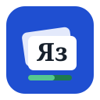
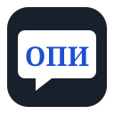

Tetrad Studio
Russian reading, vocabulary and OPI practice
Russian Reader
Leveled texts from everyday Russian to Dostoevsky and legal writing, with tap-to-learn.
1

List Trainer
Flashcards, quizzes, root drills and your own word sets.
2

OPI Memory Tool
Scripts, templates and mock interviews for the oral exam.
3